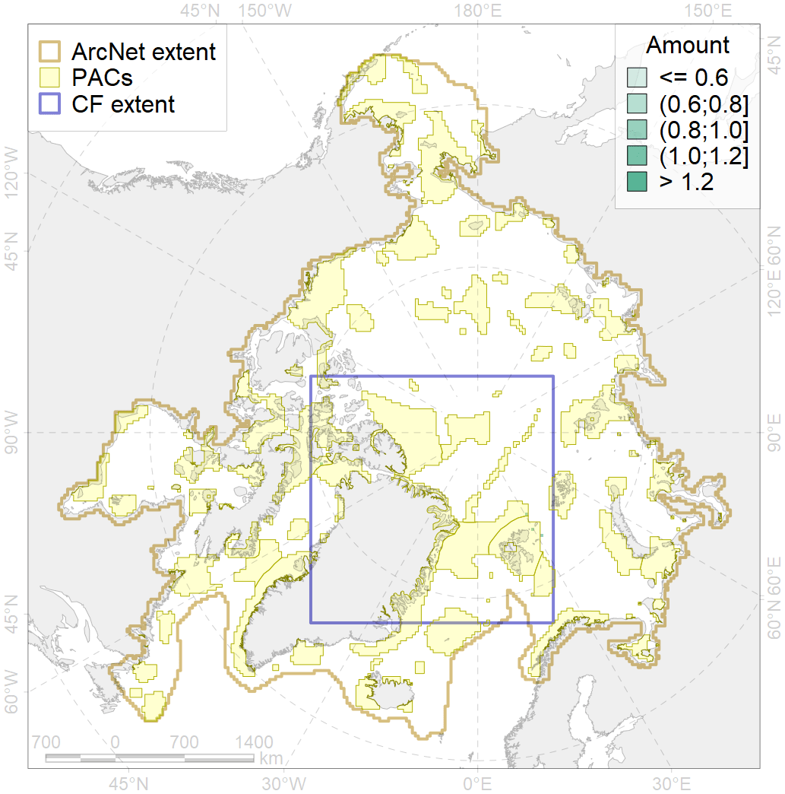
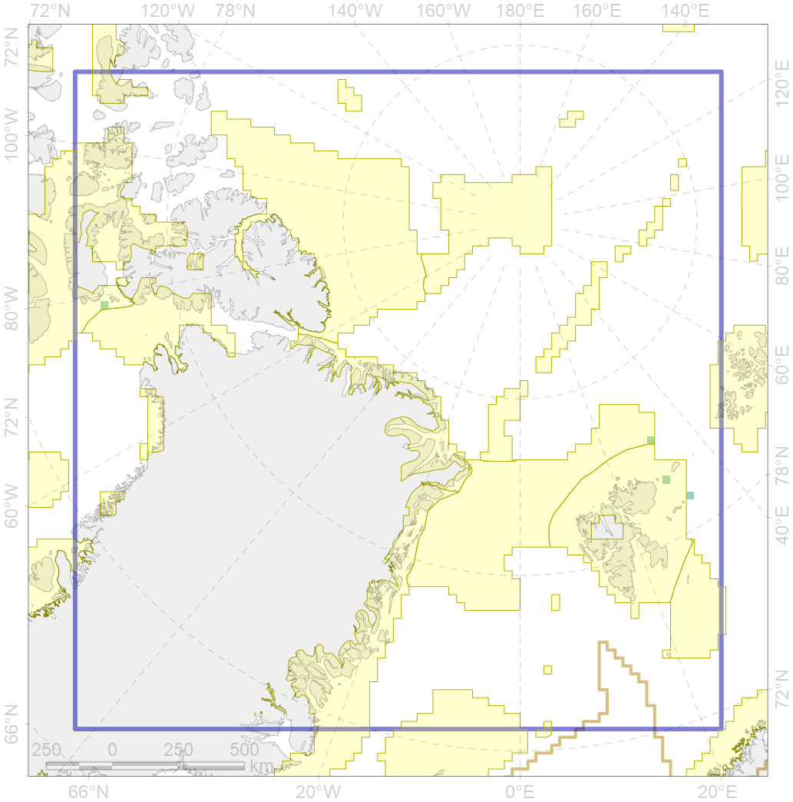

7053

| CF code | 7053 |
| CF name | cold corals of the High Arctic |
| Time Period | 1915-2014 |
| Source(s) | Freiwald A, Rogers A, Hall-Spencer J, Guinotte JM, Davies AJ, Yesson C, Martin CS, Weatherdon LV (2017). Global distribution of cold-water corals (version 4.0). Third update to the dataset in Freiwald et al. (2004) by UNEP-WCMC, in collaboration with Andre Freiwald and John Guinotte. Cambridge (UK): UN Environment World Conservation Monitoring Centre. URL: http://data.unep-wcmc.org/datasets/3 |
| Seasonality | 1-12 |
| Depth Horizon | Sea floor and water column above |
| Methodology | Occurrence records were obtained from various sources, including reports, peerreviewed articles and expert consultations. Many individuals and organisations contributed by providing UNEP-WCMC with their data in electronic form. For more information regarding sources please see the “Metadata_Cold_corals.dbf” table included. |
| Use Restrictions | UNEP-WCMC General Data License (excluding WDPA). See www.unepwcmc.org/policies/general-data-license-excluding-wdpa#data_policy and www.unep-unep-wcmc.org.wcmc.org/policies. For commercial use, please contact businesssupport@ |
| Author Name | V. Spiridonov |
| Notes | |
| Scenario’s Target | 0.5 |
| Target Achievement | 0.662 (Scenario: 132.5%) |
| PAC | Share of the Total Amount within the PAC | Share of the Target Achievement for the ArcNet | PAC’s Contribution to the Target Achievement |
|---|---|---|---|
| 29 | 25.0%25.0% | 27.0%27.0% | 20.4%20.4% |
| 30 | 25.0%50.0% | 50.0%77.0% | 37.7%58.1% |
| 51 | 0.2%25.0% | 0.4%50.0% | 0.3%37.7% |
| 52 | 24.8%25.0% | 49.6%50.0% | 37.4%37.7% |
| inner | 75.0%125.0% | 127.0%204.0% | 95.8%154.0% |
| outer | 25.0% | 5.5% | 4.2% |
| † supplement values are for area consistence whereas principal values are for Accenter compatible gridded stats |